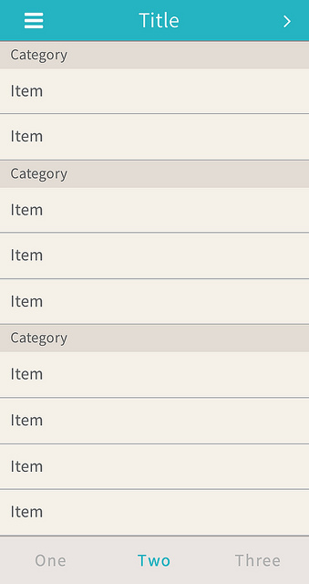
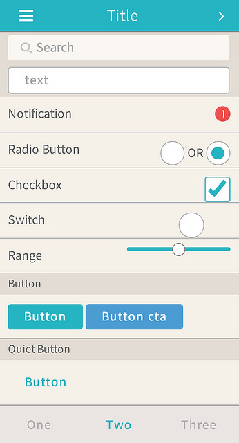
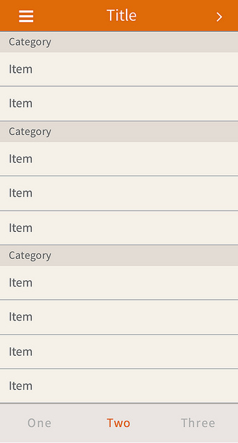
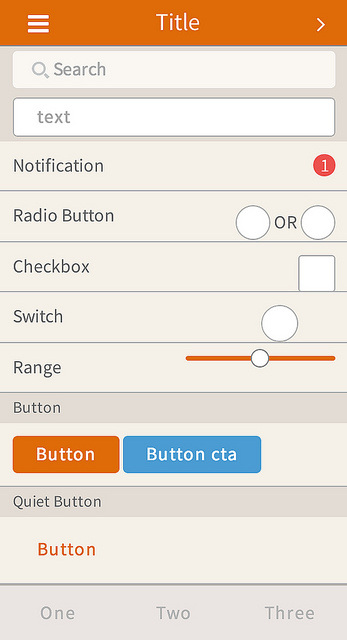
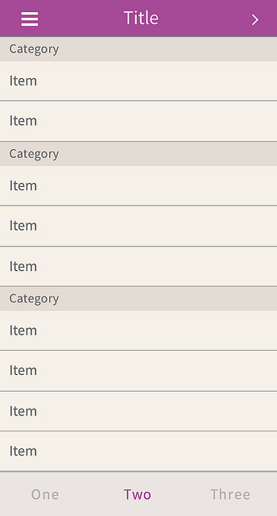
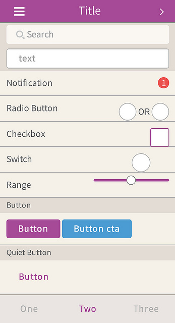

Onsen UI
AngularJS 勉強会
自己紹介
Kruy Vanna (クルィ ヴァナ)
- 1984年生まれカンボジア出身。
- インスピレーション全開な生粋のハッカー。
- OnsenUIを作った人。
四方 裕 (シカタ ヒロシ)
- 1985年生まれの元海上自衛隊員。
- アシアル社にてSE/PGを務める。
- OnsenUIの企画と開発の裏方を担当。
なにやってる人？
モバイルアプリ開発フォーム 「Monaca」の開発メンバー
HTML5でiOS/Android/Windows8アプリが作れる開発ツール
詳しくはmonaca.mobiでどうぞ。
Onsen UIとは？
AngularJSとTopcoatを組み合わせた
HTML5 モバイルUIフレームワーク
OnsenUIで作ったアプリ
Onsen UIはなぜ作られたのか
モバイルアプリの開発プラットフォームとして
モバイル向けのUIをHTML5で簡単に作る方法
を提供したかった。
jQuery Mobileなどいくつかの方法を試みるも解決に至らず
jQuery Mobileのメリットとデメリット
- コンポーネントがたくさんある
- UXがイマイチ
- ソースコードが冗長になる
- 一部のAndroid端末で動かないことがある
Onsen UIで実現したかったこと
とにかく
「簡単に」「カッコ良くて」「使える」
UIが作りたい！
ということ。
（そしてできるだけメンテが楽な仕組みで！）
Onsen UIの特徴
特徴その1: 「簡単」かつ「使える」UIコンポーネント
- 使い方はDirectiveで作られた独自タグをHTMLに書くだけ
- よく使う基本的なコンポーネントがデフォルトで用意されている
- ナビゲーションコンポーネントでページ管理できる
- 他のHTML5コンポーネントも一緒に使える
特徴その2: ぬるぬる動く
- CSSを利用した滑らかなアニメーション
- Android 2.3でも動くようカスタマイズ
特徴その3: テーマ機能
- テーマを変更するだけで全コンポーネントのデザイン変更ができる
- Font Awesomeをサポート
- さらにCSSで独自にカスタマイズできる
Onsen Blue
 
Onsen Orange
 
Onsen Purple
 
実際のアプリ
Todo & Flickr App
Monaca Tunes
Onsen UIのこれから
- Onsen UIのGUIツール「UIBuilder（仮）」の提供
- Webコンポーネントを公開・共有できる仕組み作り
- AdobeのTopcoatチームと共同して開発を進めていく


Thank you for your attention !